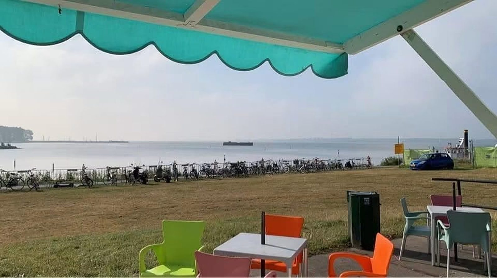
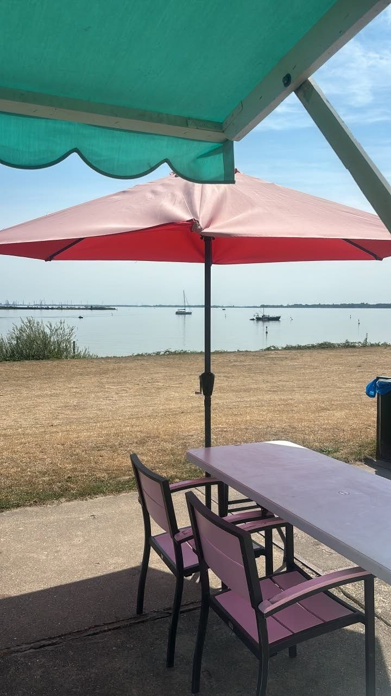
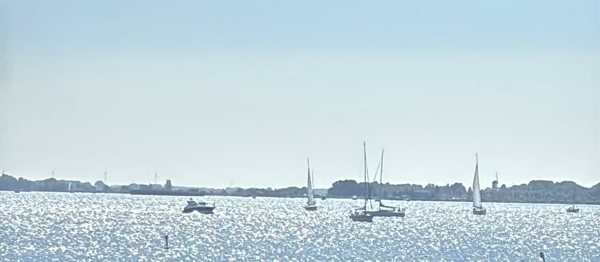
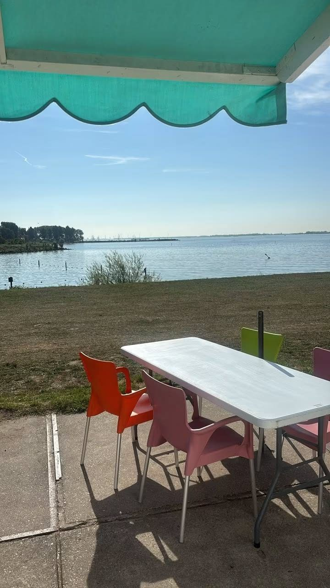
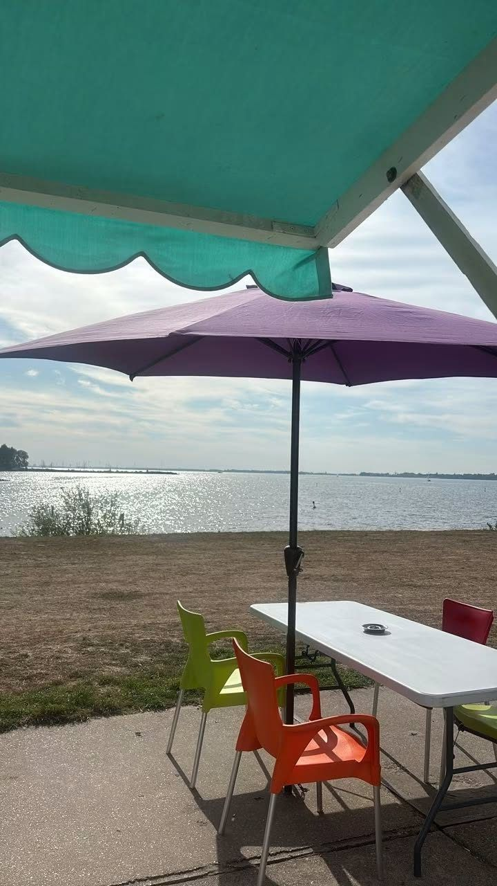
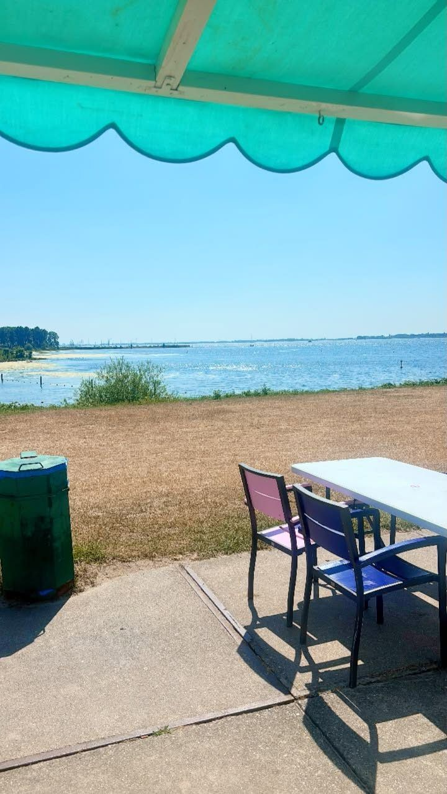

Patat, ijs en drinken aan het Haringvliet
Bij het strandje van Numansdorp, naast de Haringvlietbrug. Vanaf ons terras kijk je zo over het water. Open in het seizoen, als het lekker weer is.
Even iets halen bij het strand
Na het zwemmen, fietsen of wandelen langs het Haringvliet. Je bestelt bij de kiosk en schuift aan op het terras.
Patat
Een bakje patat als je honger hebt gekregen van een dag aan het water.
IJs
Een ijsje op het terras, met uitzicht over het water.
Drinken
Iets kouds voor een warme dag, gewoon aan de kiosk.

Kom genieten van het mooie uitzicht
Vanaf ons terras kijk je over het Haringvliet, met de zeilboten voorbij en de Haringvlietbrug naast je. Onder de luifel zit je uit de zon, of je pakt een plek onder een van de parasols.
Op warme dagen is het hier heerlijk, met een lekker briesje van het water. Ook handig als pauze tijdens een fietstocht.
"Het is lekker weer, we zijn open. Kom genieten van het mooie uitzicht."Summer Beach op Facebook



Zijn we vandaag open?
Summer Beach is een seizoenszaak. We gaan open in het voorjaar en zijn er de hele zomer, op de dagen dat het lekker weer is.
Zo vind je ons
Summer Beach staat bij het strandje van Numansdorp, langs de weg parallel aan de A29, vlak bij de Haringvlietbrug.
Summer Beach
parallel aan de A29
3281 LT Numansdorp